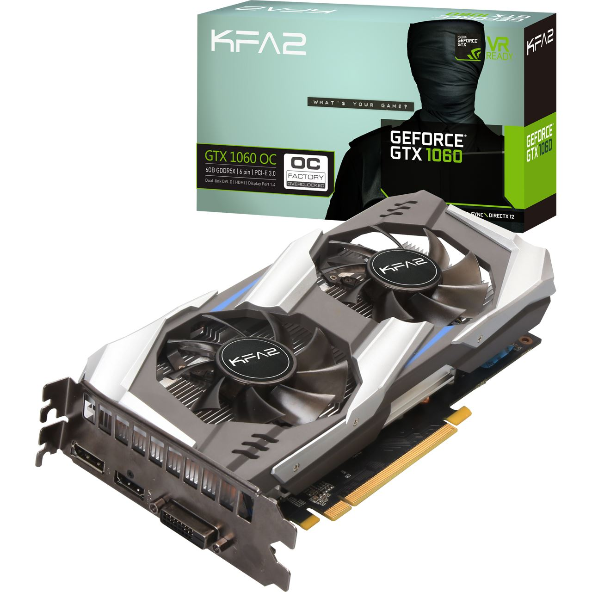
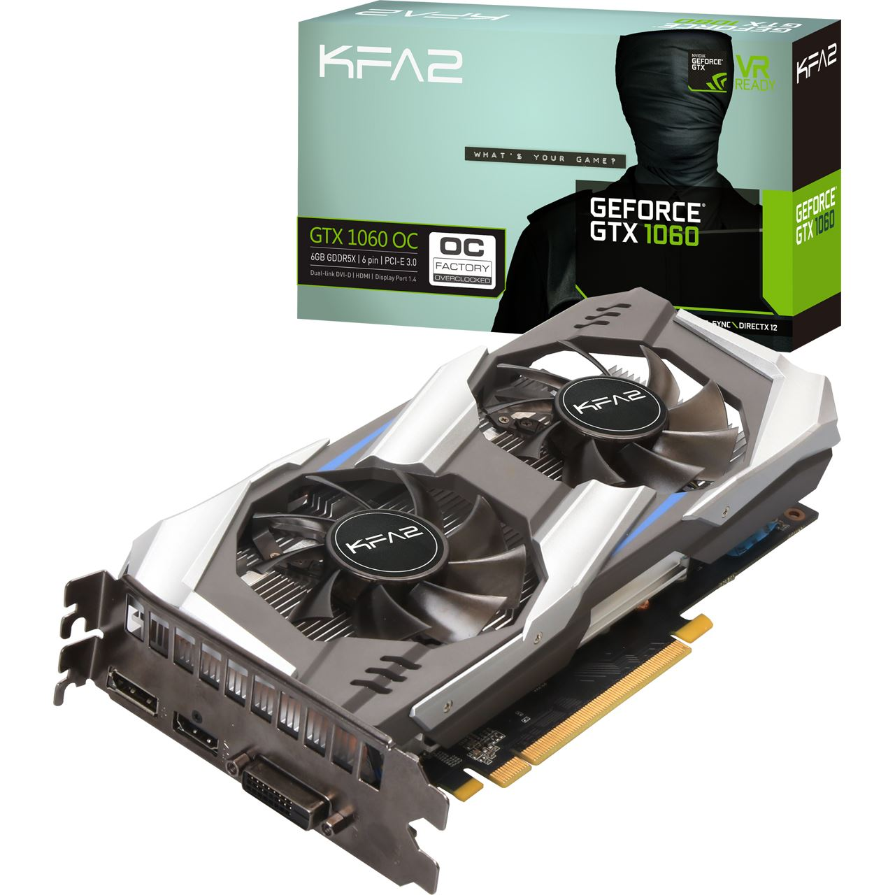

Gtx 1060 6gb KFA2

Gtx 1060 6gb KFA2
Ryzen 7 2700
MSI X370 TITANIUM
G.Skill RipjawsV 16GB DDR4-3200Mhz
Alimentation ENERMAX 80+ Gold 600W non modulaire
SSD Crucial SATA 250gb

HDD Seagate Ironwolf 2Tb 7200trs/m
Boitier ATX Kolink Stronghold
Rétroéclairé en Blanc
Avec un verre trempé
Pour le montage de mon PC je l'ai effectué étape par étape :
1ère Étape : J'ai ouvert les 2 côtés du boitier puis je l'ai disposé sur une table nétoyée au préalable.
2ème Étape : J'ai monter le processeur sur la carte mère, appliqué de la pâte thermique sur le processeur
puis posisionné le ventirad sur le processeur en le visant des 4 côtés.
3ème Étape :J'ai mis en place les barrettes de RAM.
4ème Étape :J'ai fixé ma carte mère dans mon boitier en visant bien toutes les entrenoises.
5ème Étape :J'ai installé mon HDD de 2to et mon SSD de 250Go.
6ème Étape :J'ai installé mon alimentation et fais mon câble management.
7ème Étape :J'ai terminé en mettant en place ma carte graphique (GPU) et en refermant mon boitier.
J'ai installé windows 10 sur le ssd Crucial de 250Go à l'aide de l'outil Rufus, une clé USB vierge
et une clé d'activation windows 10 pro que j'ai acheté sur le web.
Pour installer Windows 10 il suffit de brancher la clé USB qu'on a préalablement formaté et transformé
en clé bootable, d'allumer le PC et suivre l'installation de Windows 10, puis de rentrer la clé d'activation
lorsqu'on nous la demande.Procédure pour les étapes d'un montage de PC.
En savoir plusPour effectuer cette installation j'ai regardé une vidéo youtube qui m'a expliqué, dans l'ordre les étapes
à suivre (lien ci-dessous).